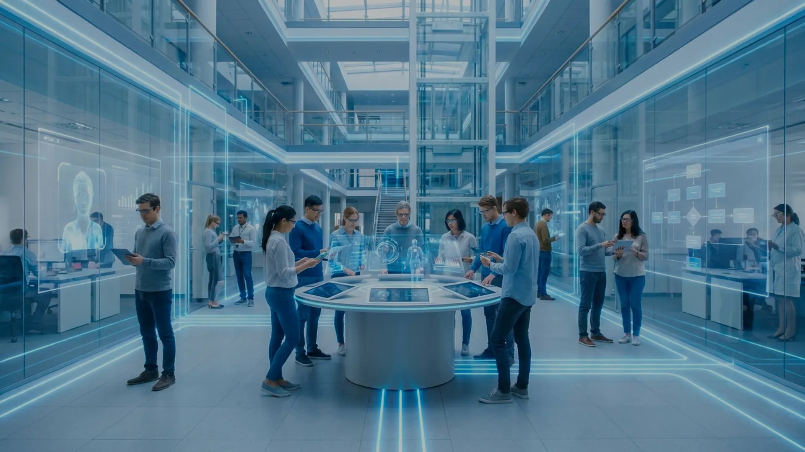
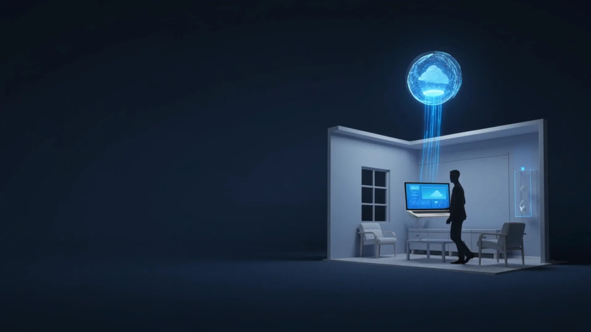
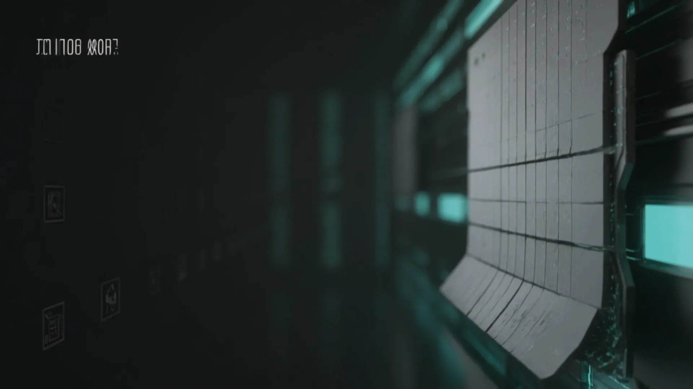
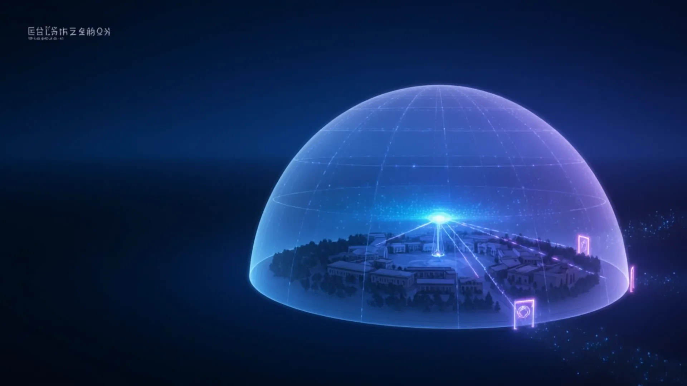

행정정보를 안전하게 관리하고, 학생의 창작·AI 실습 기회를 넓힙니다. 대학의 교육역량을 지역기업의 문제 해결로 연결합니다.

02Background
AI는 이미 학습과 행정의 기본 도구가 되었다
학습연구행정업무
‘AI 금지’의 시대종이 시험 · 제한적 사용
‘AI 권장’의 시대학습·연구·행정·업무의 중심
03Problem
현장의 목소리
학생
AI 수업인데 제 노트북으로는 딥러닝이 안 돌아가요
실습실 밖에서는 같은 환경으로 과제를 이어 할 수 없어요
AI 교육이 장비 좋은 학생에게 더 유리해지는 형평성 문제
교수
학생마다 환경이 달라 같은 코드도 다르게 동작합니다
모델 학습·파인튜닝·RAG 실습을 하고 싶어도 GPU가 부족합니다
산학협력용 안전한 AI 실습환경 부재
운영자
비싼 GPU를 샀지만 활용률은 낮고 특정 사용자에게 쏠립니다
외부 LLM 사용 시 데이터가 어디로 나가는지 통제하기 어렵습니다
AI 교육은 확대되고 있지만, 이를 안정적으로 뒷받침할 AI 통합 인프라가 없다
※ 대학 일반의 의견을 정리한 내용이며 계원예대 조사 결과가 아닙니다.
04Problem
대학이 안고 있는 복합적인 Pain Point
AI 교육과 행정의 디지털 전환 과정에서 문제는 서로 얽혀 있다
AI 교육 인프라 분산
학과별·건물별로 흩어진 실습 자원
AI 실습환경 부족
고사양 장비 없이는 수업이 어려움
원격교육 한계
실습실 밖에서는 같은 환경 재현 불가
데이터 보안 리스크
외부 AI 사용 시 데이터 유출 우려
※ 대학 일반의 과제이며 계원예대 현황은 별도 확인이 필요합니다.
05Solution
단 하나의 통합 인프라로 모든 전공을 완벽히 지원
AI Native Campus하나의 AI 인프라
06Architecture
AI 인프라 표준 프레임워크
🎓 AX 실습
AI융합 전공 · 산학협력 기업 개발자
LLM 활용 비즈니스 자동화 (Inference-Only)
상용 LLM APIRAG·프롬프트Business Auto.
🧠 AI 모델 개발
인공지능 전공 학생
모델 학습 · Fine-Tuning (From-Scratch · RAG)
PyTorchscikit-learnJupyterNeural Network
</> SW 개발
컴퓨터공학 전공 학생
AI 활용 SW 전주기 개발 (DevOps·코딩·테스팅)
CopilotJenkinsDockerCI/CD
API
vGPU
vGPU
Tokenizer
☁ 외부 상용 LLM
ChatGPT · Gemini · Claude EXAONE · Solar LLM
필요 시 외부 호출
Slurm / KubernetesGPU 자원 할당 · AI 토큰 기반 관리 · 자동 스케줄링
🧬 Internal AI
내부 데이터 학습 · On-Premise 데이터 주권 확보
🌐 Web AI·SW 실습환경
JupyterHub · VS Code Server 브라우저 기반 통합 실습
🗄 GPU 클러스터
대규모 연산 자원 풀 고성능 학습 · 추론 인프라
🧩 GPU Slicing
물리 GPU → 다중 vGPU 분할 자원 효율 극대화 · 비용 절감
🖥 VDI
교수·학생 원격 동시 접속
저사양 단말기로 AI 실습 가능 (단말 성능이 학습 제약 안 됨)
시간 · 장소 제약 없음
CHAPTER 01
VIRTUAL DESKTOP INFRASTRUCTURE
Dstation
시공간 제약 없이 학습 가능한 데스크톱 가상화 기술
OSDaaSAny Device

08Dstation
언제 어디서나, 나만의 가상 PC
데스크톱 가상화는 운영체제(OS)와 응용프로그램(SW)을 클라우드 환경에서 운영하는 기술입니다.
단말 종류가 더 이상 학습의 제약이 되지 않습니다
저사양 단말로도 고사양 AI 실습 → 교육 격차의 근본적 해소
☁ Cloud Center
🖥가상 PC
📦애플리케이션 SaaS
🗂사용자별 데이터
Dstation
Any Where🏠 재택🏢 사무실🌐 메타버스🚌 이동중✈ 출장
Any Device💻 노트북🖥 PC📱 스마트기기🔲 제로클라이언트📺 스마트TV
✓ 동일한 가상 PC
CHAPTER 02
GPU SLICING
Estation
고가의 GPU 활용률이 0배 향상
※ 틸론 자료 기준 수치(10% → 90% 기준). 계원예대 적용 효과는 시범운영에서 측정합니다.

10Estation
DaaS + GPU Slicing이 만드는 가치
① 자원 활용률 극대화
10~15%→80~90%
단일 GPU로 다수 사용자가 동시에 학습하는 환경 구현
② 고가 장비 없이 고성능 워크로드
🧠 AI 학습🧊 3D 모델링🩻 의료영상 분석
저사양 단말로도 GPU 집약 작업 수행 · 탄력적/유동적 자원 분할
③ 엔터프라이즈급 영상 품질
일반 DaaS 5FPS/FHD64FPS · 8K약 12배 이상 품질Tilon DaaS 64FPS/8K
구분
NVIDIA MIG
Tilon GPU Slicing
분할 방식
하드웨어 기반 고정식
소프트웨어 기반 하이브리드
최대 분할 수
최대 7개
워크로드·사용자별 다수 가변
자원 재배분
재구성 필요
실시간 동적 할당·회수
적용 범위
특정 GPU 모델 한정
광범위 GPU 호환
GPU 활용률 10~15% → 최대 90%
10~15%기존 GPU 활용률
90%GPU Slicing 적용
※ 틸론 자료 기준 수치이며 계원예대의 현황 또는 확정 효과가 아닙니다. 실제 효과는 시범운영에서 측정합니다.
CHAPTER 03
SOVEREIGN AI
iStation
Internal AIAI RouterTokenizer통합 솔루션

1201 / Intelligent Economics
AI를 많이 사용할수록 비용이 증가하는 구조에서, AI를 많이 활용할수록 경제적인 구조로
💬 "우리 회사의 출장비 지급 기준을 알려줘"
GENERAL MULTI LLM
사용자 질의
↓ 멀티 LLM 플랫폼
↓ 외부 상용 LLM APIGPT · Claude · Gemini
↓ 토큰 사용량 증가
↓ 질의↑ → 비용 지속 증가
API CALL0
TOKEN0
EST. TOKEN COST₩ —
iStation · INTERNAL AI FIRST
사용자 질의
↓ iStation Coordinator
↓ Internal AI + 내부 RAG
↓ 내부 지식 기반 답변
↓ 외부 API 토큰 비용 미발생
External API Call0
External Token Cost0
Internal Knowledge Found
반복되는 업무 질의일수록 Internal AI의 경제적 효과가 확대됩니다
※ 수치는 이해를 돕기 위한 연출 예시이며, 외부 API 토큰 비용만 비교합니다. 내부 AI 인프라 비용은 별도입니다.
1302 / AI Routing
내부 AI를 먼저, 외부 AI는 필요한 순간에만
👤
USER
TextImageAudioVideo
◆
iStation
COORDINATOR
① 내부 우선
INTERNAL VLM 우선 실행
Intent Analysis
Internal Knowledge Search
Group RAG Search
Multimodal Understanding
92%INTERNAL CONFIDENCE
답변 가능
Internal Answer → Coordinator → USER 통합 반환
② 추가 정보 필요 시
WEB SEARCHSource Collection → Internal AI Summary
APPROVED PUBLIC LLMPolicy Check → Token Budget → Approved Call
AI GOVERNANCE
Tokenizer토큰 사용량 분석
Budget Control조직·사용자별 한도
Management Tool모델·정책·Routing 관리
Audit Log요청·AI 사용 이력
하나의 질문에 하나의 AI가 아닌, 가장 적합한 AI를 자동 선택
※ 92%는 동작을 설명하기 위한 연출 예시입니다.
1404 / Hierarchical Multi-AI
계층적 다중 AI 체계 Hierarchical Multi-AI System (OIGP)
Organization › Internal › Group › Personal — 정책은 아래로 상속, 지식은 위로 확산
🏢
Organization AI조직 단위 AI
전략·의사결정 · 전사 자원 최적화 · 데이터 통합·분석·예측
🌐
Internal AI내부 운영 AI
부서·기능별 운영 최적화 · 프로세스 자동화 · 성과 모니터링
👥
Group AI그룹·팀 AI
팀 협업·업무 지원 · 그룹별 격리 RAG · 지식 공유·과제 관리
🧑💼
Personal AI개인 맞춤 AI
개인 비서 · 일정·업무 관리 · 맞춤 학습·추천·생산성 향상
Organization
▼
Internal
▼
Group
▼
Personal
🗄 공통 데이터 통합·보안
🛡 권한·보안 거버넌스
📈 모니터링·평가 지속 개선
🔄 상위 ↔ 하위 상호 피드백
CHAPTER 04
AI 개발환경 통합 플랫폼
Tstation
AI 개발환경을 원클릭으로 제공 — 복잡한 설정 없이 바로 AI·SW 실습
17제안 개요
4개 제안, 1개 운영 방향
행정정보 보호, 창작·AI 실습, 지역 협력을 하나의 방향으로 연결합니다. Dstation X·XE·XI로 4개 과제를 준비 수준에 맞춰 단계적으로 도입합니다. 과제별 사용자·권한·자료 운영기준은 대학이 정합니다.
① 행정 보안
Dstation X
행정직원·외부 유지보수 VDI
개인정보 처리 작업환경과 업체 접속을 대학이 통제
근거 개인정보 영향평가 공고
② 창작 실습
Dstation XE
공유 GPU 창작 실습환경
영상·3D·공간 교과의 고성능 작업을 수업 밖으로 연장
근거 실감미디어 마이크로디그리
③ AI 교육
Dstation XI
생성형 AI 교육환경
승인된 모델·자료·권한·사용량을 대학이 관리
근거 Creative AI·D 30+ 캠프
④ 지역 협력
Dstation X
RISE 기업·지역 협력 작업공간
기업·과제별 공동 작업환경으로 협업을 지속
근거 경기 RISE 컨소시엄 협약
보안 강화
교육·산학 확장
카드를 클릭하면 해당 상세 화면으로 이동합니다.
18대학 보안사고 현황
3년 41건, 8월 이후 22건
2023년 11월부터 2026년 11월 19일까지 보도·공식자료로 정리한 국내 대학 보안사고·개인정보 유출 사례는 41건입니다. 이 중 22건이 2026년 8월 이후에 해당합니다. 11월 12~19일 8일 동안에만 18건이 공지되거나 공개됐습니다.
0건
3년 누적 사례 2023.11 ~ 2026.11.19
0건
2026년 8월 이후 전체의 54%
0건
11월 12~19일 단 8일 동안
연도별 공지 건수
0
12
5
24
2023.11~12
2024
2025
2026 (~11/19)
사고 유형 (41건)
33외부 해킹
교육부 · 대학 사이버 침해 탐지·신고
2024
60,856
2025
80,310
2026 상반기
55,226
▲ 2025년 전년 대비 +32.0% · 전국 대학 380곳
※ 보도·대학 공지 기준 조사자료 집계(국내 4년제·산학협력단). 외부 해킹 정황·선제 차단·설정 오류·내부 실수 포함으로 '확정 해킹 건수'가 아닙니다. 출처: 데일리시큐·보안뉴스·ZDNet 등 보도, 교육부 자료(2026.11.19 확인)
19대학 보안사고 목록
8월 이후 22건, 대학 22곳
2026년 8월부터 11월 19일까지 공지·보도된 사고이며, 유출 확인과 정황·의심·선제 차단을 함께 표시했습니다.
시기대학규모사고 지점 · 주요 내용
18.14서강대약 18만 건통합로그인 · 암호화 비밀번호 포함
210.22연세대약 1만 명(보도)포털 · 연락처·최종 로그인 IP
310월국립부경대5,106명등록금 수납 · 가상계좌 번호
411.9부산외대조사 중업무용 PC · 악성코드 감염 의심
511.12경일대3,056건교직원 전자문서 · 연락처·주소
611.13인제대24,011건플립러닝 연계 서버 · 휴대전화
711.14대구한의대1,281건연구행정 rERP · 직번·학번·성명
811.14한경국립대772건연구행정 rERP · 웹 취약점 악용
911.14부산대500건연구행정 rERP · 직원번호·학번
1011.15강원대비공개연구행정 rERP · 18개 항목
1111.16인천대선제 차단연구행정 · 유지보수 서버 의심
시기대학규모사고 지점 · 주요 내용
1211.16한성대약 2만5천 건웹메일 계정 · 암호화 비밀번호
1311.16서울시립대15명홈페이지 · 토큰값·세션값
1411.17영남대조사 중도서관·취업 · 학번·성명·이메일
1511.17국립한국해양대1,359건연구행정 rERP · 성명·생년월일
1611.17동의대530명연구비관리 · 직번·생년월일
1711.18한림대947건연구행정 · 위탁업체 서버 침입
1811.18배재대미공개LMS·학사 · 암호화 비밀번호
1911.19전주대18만여 건온라인 교양 · 주민번호 2만5천여
2011월숙명여대재확인 필요연구행정 rERP · 교번·학번·성명
2111월한국외대미확인연구행정 · 유출 정황, 시스템 중단
2211월한남대미확인연구행정 · 서비스 중단 공지
※ 시기는 공지·보도일, 확인되지 않으면 발생일. ‘11월’ 3곳은 11월 12~19일 중. 규모는 대학 공지 또는 언론 보도 수치이며 건·명 단위가 달라 합산하지 않습니다. 연구행정 사고 원인은 11/19 현재 미확정(한경국립대는 웹 취약점 악용 발표). 출처: 대학 공지, 데일리시큐·ZDNet 등 보도
20AI 해킹도구 아르텍스(ARTEX)
AI 해킹도구 아르텍스, 44일간 60곳 침입
아르텍스는 목표를 입력하면 정찰·취약점 탐색·침투를 AI가 수행하는 공개형 침투테스트 도구입니다. 국내 금융사와 기업 공격에 사용됐고, 11월 대학 연쇄 해킹에서도 사용 정황이 나왔습니다.
아르텍스란?
대규모 언어모델(LLM)을 연결한 자율형 AI 에이전트 · 2026년 7월 공개
목표 입력한 줄
정찰
취약점 탐색
침투
수집·보고서
숭실대 가상 실험: 약 6분 만에 가상 개인정보 100건 조회
같은 피의자의 하루 평균 침입 수서울경찰청 발표 보도
사용 전 · 약 1년
30곳하루 0.08곳
사용 후 · 44일
60곳하루 1.36곳
하루 평균 –
0만여 건
기업·병원·학원 등 90여 곳
개인정보·업무자료, 전체 범행 기간 합계 신고 15곳, 나머지 75곳 수사 중
약 0만 명
국내 금융권 개인정보
2026년 9월 말~10월 초 공격 미국 FBI 경보(11.13)
약 0개 대학
연구행정 rERP 침해 정황
별도로 4개 대학 회계시스템 조회 정황 에스투더블유(S2W) 분석
0여 개
전 세계 노출된 관리 콘솔
10월 원본 공개 중단 후에도 기존 배포본 회수 불가
FBI 권고는 관리 경로 제한 · 최소 권한 → 작업환경과 관리자 접속은 VDI로 통제, 웹 취약점·패치는 별도 조치
※ 820만여 건은 2025.9~2026.10 전체 범행 합계로 아르텍스 사용 전 피해 포함. 대학 사건은 사용 정황 단계이며 공격자는 사용을 부인, 배후 미확인. 출처: 한국경제(2026.10.26), FBI FLASH-20261113-001, 연합뉴스(2026.10.10, 11.22), 숭실대 AI안전성연구센터·ZDNet(2026.10)
21법적 의무와 비용
과징금 6.2억, 72시간 통지 의무
전북대는 32만여 명 유출로 6억2,300만 원의 과징금을 받았습니다. 2025년 개정으로 업체를 포함한 '시스템에 접속한 자' 전원의 접속기록을 대학이 남겨야 합니다. 2026년 9월 11일부터는 유출 가능성이 있을 때도 대통령령이 정하는 경우 72시간 안에 통지해야 합니다.
① 과징금
대학 3곳의 처분 사례
전북대
6.23억
이화여대
3.43억
순천향대
1.93억
전북대·이화여대 취약점은 구축 당시(2010·2015년)부터 존재
② 접속기록 보관
기록 대상이 업체까지 확대
개인정보 취급자
→
시스템에 접속한 자 전원
「개인정보의 안전성 확보조치 기준」 2025년 개정 · 최소 권한 · 접속 제한 · 접속기록 보관 요구
③ 유출 통지
가능성 단계의 통지
72시간
유출 가능성 인지범위 판단정보주체 통지
개정 개인정보 보호법 2026.9.11 시행 · 대통령령이 정하는 경우
→ 직원 개인의 주의가 아니라 구조로 지켜야 하는 의무입니다. 기록이 흩어져 있으면 72시간 판단부터 막힙니다.
※ 출처: 개인정보보호위원회 처분 보도(세계일보·보안뉴스), 법률신문(안전성 확보조치 기준 개정, 개인정보 보호법 개정 시행)
22계원예술대학교 현황
영향평가 6개 시스템, 다음은 작업환경
계원예술대학교는 2026년 10월 23일 6개 시스템의 개인정보 영향평가를 공고했습니다. 평가항목에는 접근통제·접속기록·개발환경 통제·출력물 보호가 포함됩니다. 이 중 사용자와 외부업체의 작업환경 과제를 Dstation X로 구체화합니다.
2026. 10.23
개인정보 영향평가 수행용역 공고
※ 공고 9,500만 원은 영향평가 용역 예산으로, VDI 구축 예산과 별개입니다.
종합정보시스템
입시관리시스템
학생경력개발시스템
현장실습시스템
평생교육원시스템
도서관시스템
평가항목을 클릭하면 Dstation X 대응이 표시됩니다.
후속 개선과제
사용자·업체 작업환경을 Dstation X로
PC·노트북·업무시스템·외부 연계기관 사이 개인정보 흐름 확인 요구 → 작업환경 통제로 이행
업무 파일이 개별 PC에 남거나 업체가 계정을 공유하면 작업 이력을 확인하기 어렵습니다. Dstation X는 직원에게 부서별 가상 PC를, 업체에는 작업자별 전용 작업공간을 제공합니다. 데이터는 서버에 남고 화면만 전송되며, 접속은 중앙 로그로 기록됩니다.
👩💼
행정직원
개인정보 처리 부서
🛠️
외부 유지보수
개발·위탁 업체
종합정보입시관리학생경력개발현장실습평생교육원도서관
※ 위험 예시는 일반 상황이며 계원예대 현황은 별도 확인이 필요합니다. 교내 상주·방문 작업에 전용 VDI 적용. 교외 접속은 대학 보안정책·승인 범위 확인 후 설계. 인증·접근제어는 기존 체계와 연계.
24운영 절차
계정 발급부터 회수까지 5단계
업체 공용 계정 1개로 여러 명이 작업하면 작업자를 특정할 수 없습니다. 작업 요청서 기준으로 계정을 열고, 작업이 끝나면 권한과 임시자료를 회수합니다. 승인·작업·회수 기록을 영향평가 개선과제의 이행 증빙으로 활용할 수 있습니다.
관리 위험 예시
Dstation X 적용
보안 인증Dstation X(v10.0) 국가정보원 보안기능확인서
품질 인증GS인증 1등급 (2026.9)
유사 레퍼런스중앙대의료원 교직원 약 4,500명 · OTP·캡처 방지·워터마크
※ KISA 보안공지(2025.2): 외부 업체 접속은 필요할 때만 허용, 상시 연결 지양, 접속 단말 제한·다중인증 적용 권고. 레퍼런스는 공급사·병원 발표 기준.
25② Dstation XE · 창작 실습
공유 GPU로 창작 실습 시간 확대
계원예대는 메타버스 스페이스·시네마틱 VR·이머시브 XR·버추얼 3D 캐릭터 4개 마이크로디그리를 운영해 왔습니다. Dstation XE는 GPU를 공동 운영해 승인된 접속환경에서 수업 밖 작업을 지원합니다. 규모는 학생 수가 아니라 대표 교과의 실제 과제로 검증해 정합니다.
시범 검증 항목 (클릭해 체크)
※ Adobe는 가상환경에서 Named User 라이선스만 허용하고 Shared Device License는 허용하지 않습니다.